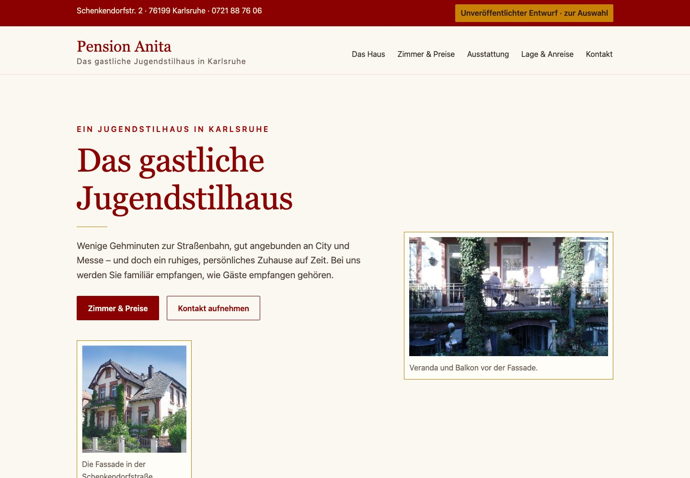
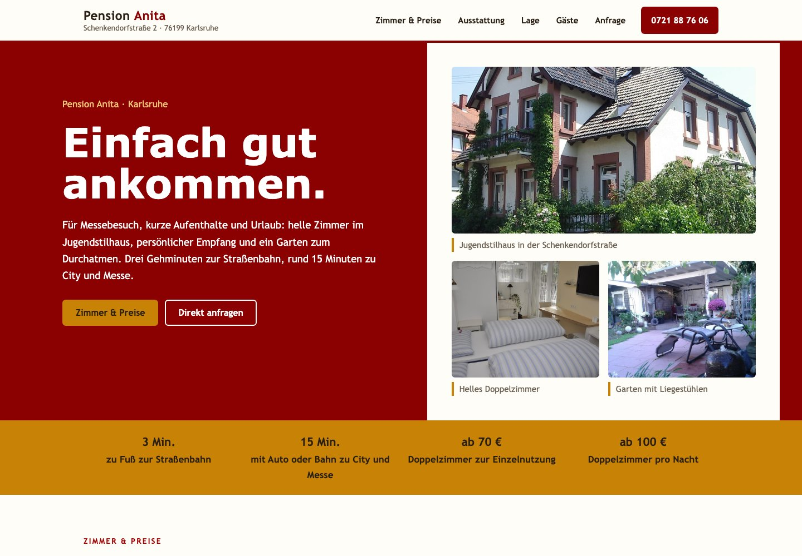
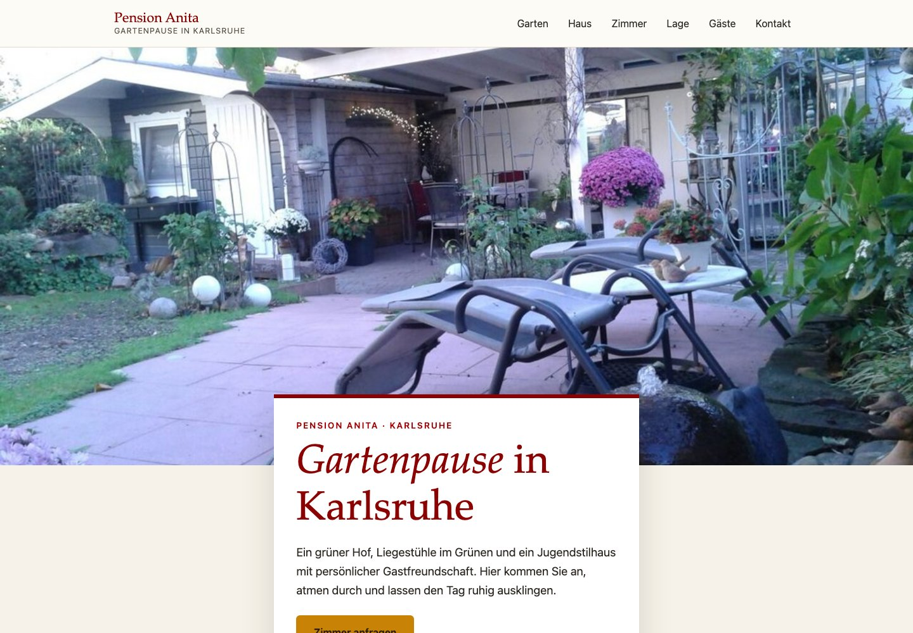

Das gastliche Jugendstilhaus
Ruhig und persönlich. Das Haus als Charakter, sorgfältige Serifenschrift und eine Bildfolge wie in einer kleinen Hausbroschüre.
Gregory Schenk · Gestaltungsvorschau
Drei eigenständige Vorschläge für die Pension Anita in Karlsruhe — mit vorhandenen Bildern, persönlicher Gastlichkeit und klaren Wegen zur Zimmeranfrage. Die Markenfarben bleiben erhalten.

Ruhig und persönlich. Das Haus als Charakter, sorgfältige Serifenschrift und eine Bildfolge wie in einer kleinen Hausbroschüre.

Klar und direkt. Orientierung, Zimmer und Preise stehen früh im Mittelpunkt — besonders praktisch für kurze Aufenthalte und Messebesuche.

Atmosphärisch und bildbetont. Garten, Veranda und Zimmer erzählen von einem persönlichen Ort zum Ankommen.
Bei der Auswahl: Welche Richtung passt zum Haus und seinen Gästen? Sehen Sie sich Einstieg, Bilder, Lesbarkeit und den Weg zur Anfrage an. Texte und Funktionen sind anschließend gemeinsam verfeinerbar.
Die Links zu Yelp führen zu Ihrem bestehenden Profil. Texte, Bildauswahl und Details stimmen wir für eine Umsetzung gemeinsam ab.